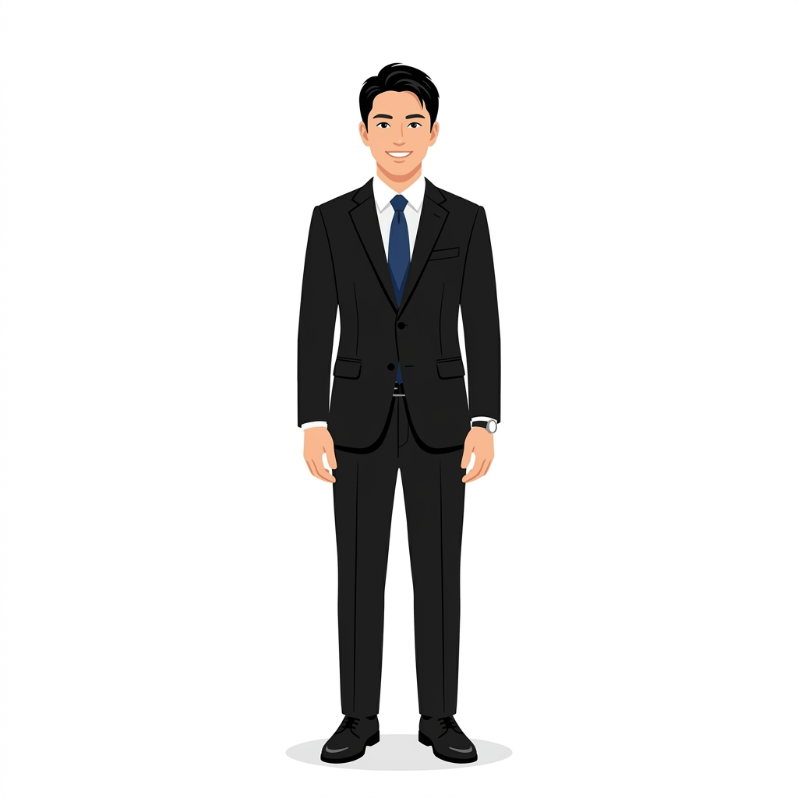

👔 男性編：チェックポイント5選

1. 髪型（ヘアスタイル）
清潔感第一の短髪が基本です。前髪は目にかからない長さにし、耳周りと襟足はスッキリと整えましょう。
2. ヒゲ・眉毛
ヒゲは剃り残しがないよう当日の朝に処理します。眉毛は細くしすぎず自然に整えましょう。
3. スーツ・ネクタイ
紺やグレーの落ち着いた色。ネクタイは青系やエンジ系を選ぶと真面目な印象を与えられます。
※「クールビズ可」の場合、ノーネクタイでもOKですが、念のためジャケットは手に持って訪問するのが無難です。
4. シャツ
無地の白が基本で、肌着についても同様です。襟や袖のヨレや汚れに注意し、アイロンがけされたものを着用します。
5. 足元（靴下）と時計
靴下は黒や紺で、座った時にすねが見えない、ふくらはぎ丈を選びます。時計はシンプルなものを。
👠 女性編：チェックポイント5選
1. 髪型（ヘアスタイル）
ロングの場合はひとつにまとめて。おでこ・耳を出して、顔周りを明るく。
2. メイク
健康的な血色感のあるナチュラルメイクが基本。派手なシャドウや濃いリップは避けます。
3. スーツ・ブラウス
黒、紺、グレー系。ブラウスは白の無地で、お辞儀の際に胸元が開きすぎないよう注意します。
4. 指先・アクセサリー
派手なネイルやアクセサリーはNG。透明なトップコートや短く清潔に整える程度にします。
5. ストッキング
自分の肌の色に合ったナチュラルストッキングを着用（黒タイツNG）。伝線に備え予備を携帯。
印象アップのポイントを直接アドバイス！
履歴書の写真やお辞儀の仕方、面接本番での第一印象など、プロの視点でアドバイスします。
※既に登録している方は、専属のアドバイザーへお気軽にご相談ください。